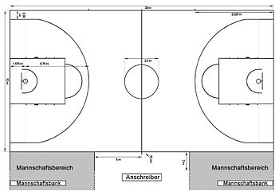
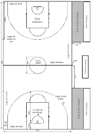
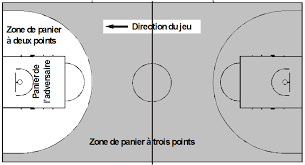

Les règles de base pour un match de basket en 5 contre 5 : ce sont 2 équipes qui ont chacune un
entraîneur et la possibilité d'avoir un entraîneur adjoint.
Ils ont chacun 5 joueurs sur le terrain et les équipes ont droit à un maximum de 7 remplacements.
Pour qu'un match commence, il y a besoin d'1 arbitre minimum et 3 arbitres maximum : 1er arbitre,
2ème arbitre et 3ème arbitre et également, 2 personnes à la table minimum qui sont le marqueur et le
chronométreur et au maximum 8 personnes. En plus, il y a le chronométreur des tirs,
l'aide-marqueur, le commisaire et 3 statisticiens.
Et il faut principalement un ballon. Un ballon taille 7 pour les hommes et un ballon taille 6 pour
les femmes.
Le terrain est limité avec des lignes rouges qui forment un rectangle qui mesure
13 à 15 mètres de large et 22 à 28 mètres de longueur dans la généralité.

Il y a 2 paniers qui mesurent 3,05m de hauteur. Un panier vaut 1, 2 ou 3 points. 1 point
pour un panier marqué au lancer franc, soit le demi-cercle au-dessus de la zone restrictive qui est
à 4,20m du panier, les 3 points derrière la ligne pleine à 6,75m du panier et le reste à
2 points (voir les images).


Un match dure 4 périodes de 10' et 5' en prolongation en cas d'égalité jusqu'à les départager.
Les règles de la FIBA sont appliquées partout sauf aux États-Unis.
Par exemple, en NBA, c'est 4 périodes de 12'.
Voir cette vidéo pour les règles de base en FIBA :
Les règles officielles FIBA :
Règlement officiel de basketball 2024
Document interprétations FIBA :
Interprétations officielles de la FIBA de la saison 2024-2025